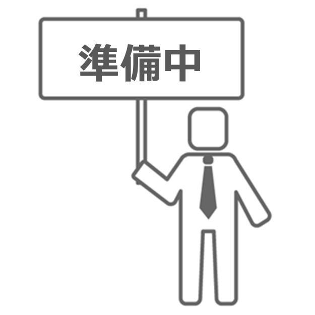

<ons-page ng-controller="idleCtrl as ctrl">
    <ons-toolbar>
        <!-- ★西島：アバター←→挑戦中画面用 -->
        <div class="left"><ons-toolbar-button ng-click="myNavigator.replacePage('status.html');"><ons-icon icon="ion-android-person" size="28px"></ons-icon></ons-toolbar-button></div>

        <div class="center">ミッションなし</div>
        <div class="right"><ons-toolbar-button ng-click="ctrl.logout();"><ons-icon icon="ion-android-close" size="28px"></ons-icon></ons-toolbar-button></div>
    </ons-toolbar>

    

    <p>次回ミッションをお待ちください</p>
</ons-page>